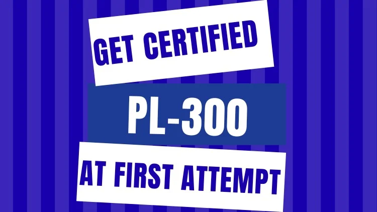

Master the PL-300 Microsoft Power BI Data Analyst Exam with Confidence — Guaranteed Pass on Your First Attempt!

600+ Practice Questions for Microsoft Power BI Data Analyst
100% coverage of the PL-300 Microsoft Learning path. This practice test is updated as per the latest study guide as on January 15, 2026.
Whether you're preparing for the PL-300 exam or looking for Free PL-300 Practice Test Questions and Answers, this site gives you a practical way to test your Power BI knowledge, identify gaps in your preparation, and build confidence before exam day.
100% free. No subscription. No paid course required. No account required to start.
What You Get
Start practicing and see where you stand before taking the official Microsoft PL-300 exam.
This practice test is aligned to the official Microsoft PL-300 study guide, updated as per the latest study guide as on January 15, 2026.
This practice test comes straight from my own PL-300 journey -the mistakes I made, the concepts that confused me, and everything I wish someone had explained clearly before I sat the exam. Passing PL-300 takes real command of Power BI fundamentals: data prep, modeling, visualization, analysis, and deployment. This test is built to get you there.
My goal: help you pass PL-300 on your first attempt. Take these tests with a learning mindset, not just an assessment mindset -you're here to close gaps, not just check a score.
Does any of this sound familiar?
If you recognized even a few of these, this test is for you.
By the time you finish, you won't just have practiced questions -you'll have strengthened your grip on both core and advanced Power BI features, sharpened your problem-solving instincts, and built the kind of clarity that carries you into the exam room with confidence instead of anxiety.
Here's the real key to passing PL-300: know the concepts cold. When you truly understand the material, you spot the right answer and move on -no second-guessing, no clock-watching, no stress.
The actual exam gives 40 to 60 questions. I got 55. Colleagues got 45 and 50. Each of these practice tests runs about 100 minutes and covers 50 questions -enough to build real stamina and depth without burning you out. By the end of this course, you'll have worked through 600+ solid questions covering every topic on the exam. Nothing on test day will catch you off guard.
Take the test. Build the confidence. Walk in ready to say: "I know this -no wasted time, no doubt."
Ready to Validate Your PL-300 Preparation?
Have you completed the PL-300 Microsoft Learning Path and want to self-assess?
Are you aiming to pass the PL-300 exam on your first try?
Want to check your readiness and topic coverage for PL-300?
Looking for simplified explanations of complex Power BI concepts?
Aspiring Power BI Data Analysts: Individuals who are new to Power BI and want to gain a foundational understanding of data preparation, modeling, visualization, and analysis via practice test.
Those who have completed the Microsoft Learning Path and wish to self-assess before the official exam can utilize this practice test.
This practice test is organized into the 6 modules of the PL-300 Microsoft Learning path:
To mirror how the real PL-300 exam is structured, this practice test uses a variety of question formats:
Working across this mix reinforces your understanding and gets you ready for whatever question style shows up on exam day.
Add a real testimonial here once a learner shares one.
Add a real testimonial here once a learner shares one.
Add a real testimonial here once a learner shares one.
This practice test is aligned to the PL-300 study guide as updated on April 20, 2026:
| Skill area prior to April 20, 2026 | Skill area as of April 20, 2026 | Change |
|---|---|---|
| Audience profile | — | No change |
| Prepare the data | Prepare the data | No change |
| Get or connect to data | Get or connect to data | Minor |
| Visualize and analyze the data | Visualize and analyze the data | No change |
| Enhance reports for usability and storytelling | Enhance reports for usability and storytelling | Minor |
| Manage and secure Power BI | Manage and secure Power BI | No change |
| Create and manage workspaces and assets | Create and manage workspaces and assets | Minor |
All questions on this site are original, independently written and reviewed, not copied wholesale from any single source.
© 2026 LR Virtual Classroom. All rights reserved.
Prepare smarter, not harder.
Pick any test below to jump straight in, no sign-in required. All 12 tests are 50 questions each, every one blending all six PL-300 topic areas (including DAX) for realistic, well-rounded practice.
Simulates real exam conditions: about 100 minutes per test, answers and explanations shown only after you submit.
Same 12 tests, but see the correct answer and full explanation right after each question, at your own pace. If you truly know the concept, you don't need to manage time — you'll spot the answer and move on.
No account or password needed, just enter your name and email so we can save your scores and let you pick up where you left off.
50 questions, about 100 minutes per test, answers shown at the end.
Same 12 tests, instant answer and explanation after each question.
No attempts yet — take a test to see your history here.
| Topic | Score |
|---|
I'm Lashmi Bai Ravindrapandian, creator of LR Virtual Classroom, a Strategic PMO and Digital Transformation Leader with 14+ years of experience leading Oracle ERP programs, business transformation initiatives, operational improvements, and AI-enabled delivery across consulting, technology, aerospace, engineering, and construction.
As I worked toward the PL-300 Microsoft Power BI Data Analyst certification, I wanted to understand Power BI's data preparation, modeling, visualization, and analysis capabilities more deeply. While studying, I realized that learning the material was only one part of the preparation. The real challenge was applying that knowledge to questions and recognizing where there were still gaps.
That is why I created this practice test.
I wanted a simple, practical place where learners could test themselves, revisit topics they found difficult, and build confidence before sitting for the actual exam.
If you're preparing for the PL-300 Microsoft Power BI Data Analyst exam, whether you're completely new to Power BI or you've already worked through the Microsoft Learning Path, this practice test is for you.
Use it to reinforce what you've learned, identify areas that need more attention, and get comfortable with exam-style questions before the real thing.
No prior certification required.
No paid course.
No login is required to start practicing.
I believe good learning resources should be accessible to anyone who is willing to put in the effort to learn.
There are many excellent courses and resources available, but I wanted to create something that could sit alongside them as a simple, practical practice tool without another subscription or paywall.
So this practice test is completely free, with no ads and no hidden costs. Sign-in is optional and only exists for those who want to save their scores and practice history across visits.
I built this as a learning resource, and I hope it becomes a useful part of your preparation. Use it to practice, find your gaps, and walk into your PL-300 exam feeling prepared and confident.
Good luck with your certification journey.
Spotted a wrong answer, a broken link, or just want to say hello? Send a message below and it goes straight to my inbox.
LR PL300 Practice Test is an independent, unofficial study resource created by LR Virtual Classroom. It is not affiliated with, endorsed by, sponsored by, or in any way officially connected with Microsoft Corporation.
Microsoft, Power BI, Power BI Desktop, Power Query, DAX, Microsoft Fabric, PL-300, and any other Microsoft product or certification names referenced on this site are trademarks of Microsoft Corporation. They are used here for identification and educational purposes only.
All questions on this site are original: independently written and reviewed, not copied wholesale from any single source, and mapped to the publicly available PL-300 exam skills outline. They are intended as a study and self-assessment aid. Working through this practice test does not guarantee a passing score on the official Microsoft PL-300 exam, which is administered solely by Microsoft and its certified testing partners.
Every effort is made to keep the content accurate and current with the official exam skills outline, but Microsoft's exams and study guides can change at any time. Always cross-check against Microsoft's own official resources before sitting the real exam.
You can take every practice test on this site with no sign-in at all. If you choose to sign in to save your score history, all that's asked for is a name and email address, no password. That name/email and your score history are stored only in your own browser's local storage (localStorage). They are never transmitted to, or stored on, any server or database run by this site, because this site doesn't have one, it's a static page.
That also means your data lives only on the device and browser you signed in with. Clearing your browser data, or switching devices/browsers, will clear it too, and there's no way for LR Virtual Classroom to recover it for you.
If you use the Contact page, the name, email, and message you submit are sent via FormSubmit.co, a third-party form-delivery service, to reach the site owner's inbox. That information is used only to respond to you, never for marketing, and never sold or shared with anyone else.
This site runs no advertising and no third-party analytics or tracking scripts. The only external resource loaded is Google Fonts (for the site's typeface), which involves a request to Google's font CDN when the page loads.
If this policy ever changes, the update will be posted on this page.